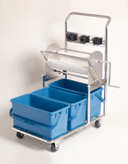

| SlimLine� Cart - 2 and 3 Bucket System | |
|  |
The core of the Slimline Cleaning System, this modular, electropolished stainless steel cart is available in 2 or 3 bucket configurations. When used with three B-7 buckets the system ensures correct disinfect, rinse and void stages in sterile and pharmaceutical processing. Can be used with or without the W-7 Wringer. The three grip-it holders on the back of the cart allow for an easy interchange and storage of handles and additional mop heads. C3A-02 wire basket for extra storage also available. Product id: C-22S, C-33S |